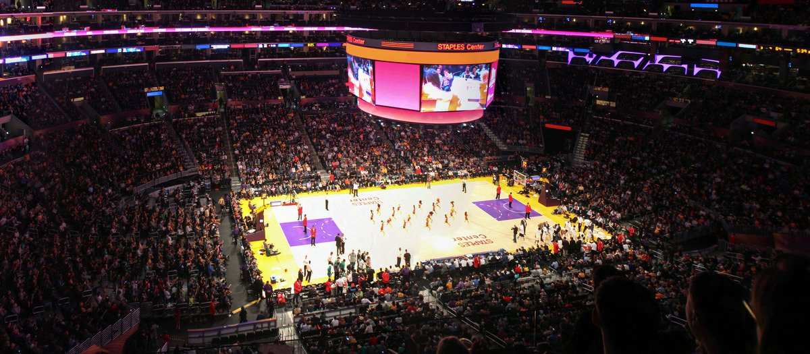
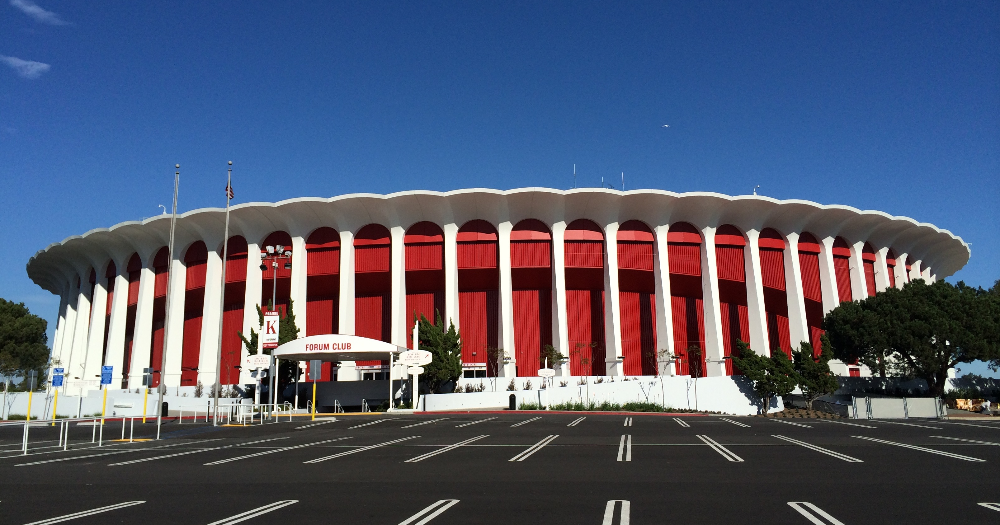

The Lakers play their home games at Staples Center, located at L.A. Live in Downtown Los Angeles. The arena opened in fall 1999, and seats up to 18,997 for Lakers games. Owned and operated by AEG and L.A. Arena Company, the arena is also home to the Los Angeles Clippers, the WNBA's Los Angeles Sparks, and the NHL's Los Angeles Kings.
Before moving to Staples Center, for 32 seasons (from 1967 to 1999), the Lakers played their home games at The Forum in Inglewood, California, located approximately 10 miles southwest of the team's current home. During the 1999 preseason, the Lakers played their home games at the Forum before officially moving into Staples Center, and once again hosted a preseason game versus the Golden State Warriors on October 9, 2009, this time to commemorate the team's 50th anniversary season in Los Angeles.
Cool Time-Lapse Video Of The Staples Center Playoff Transformation

Here's How The Staples Center Goes From Ice Rink To Basketball Court In Two Hours